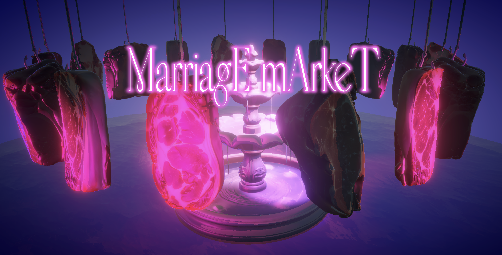
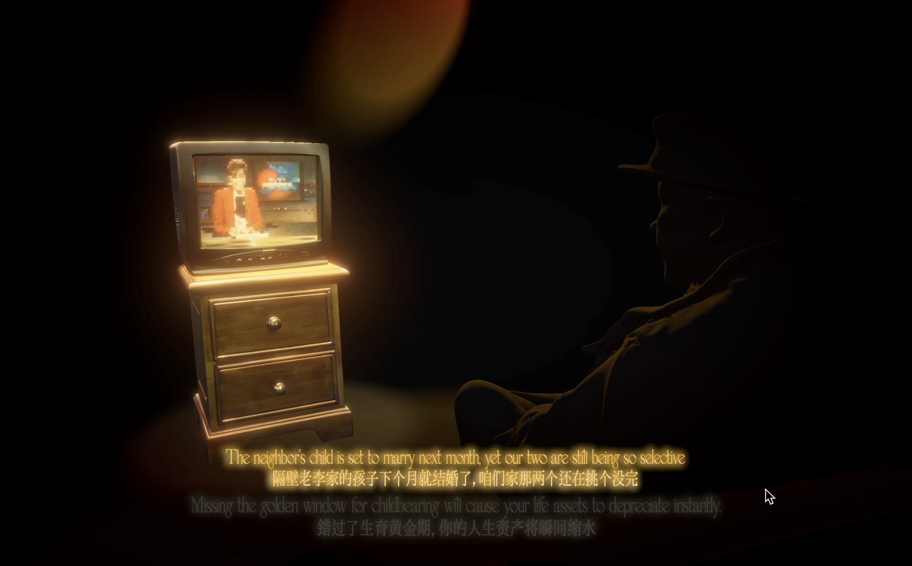
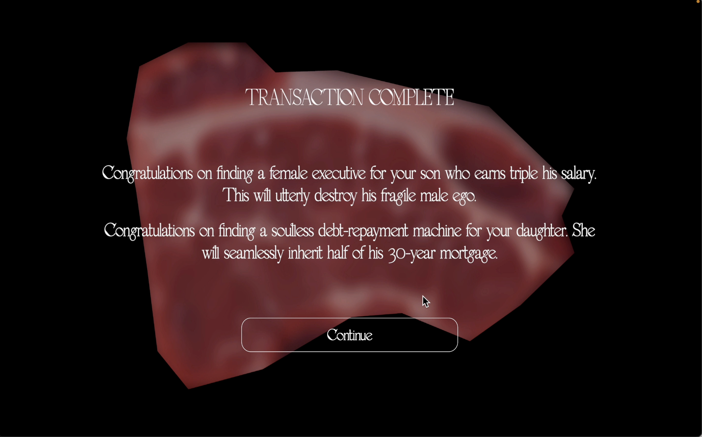
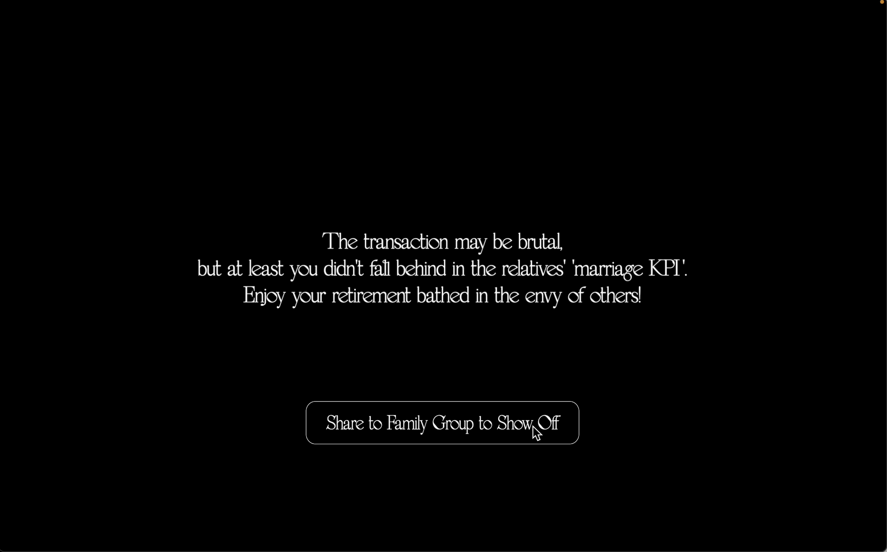
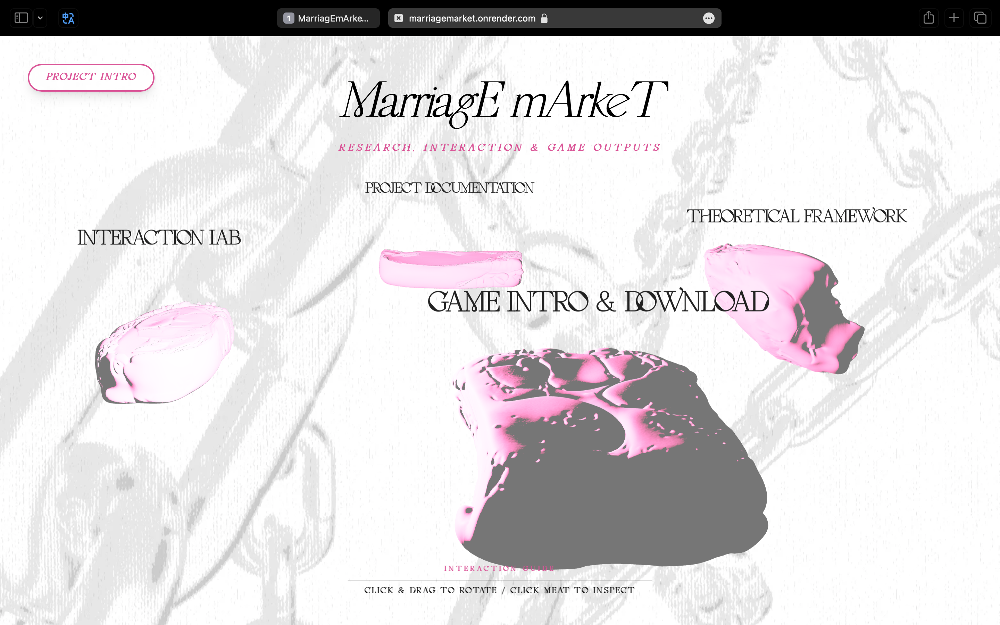
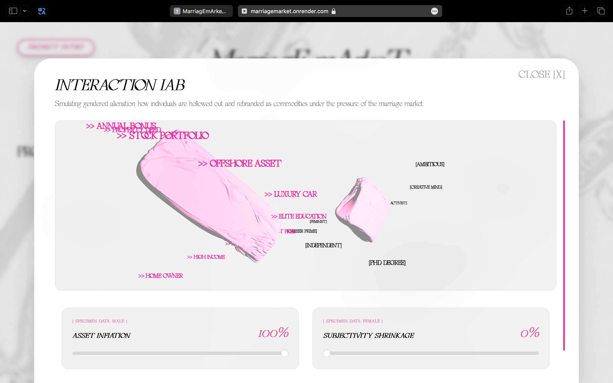
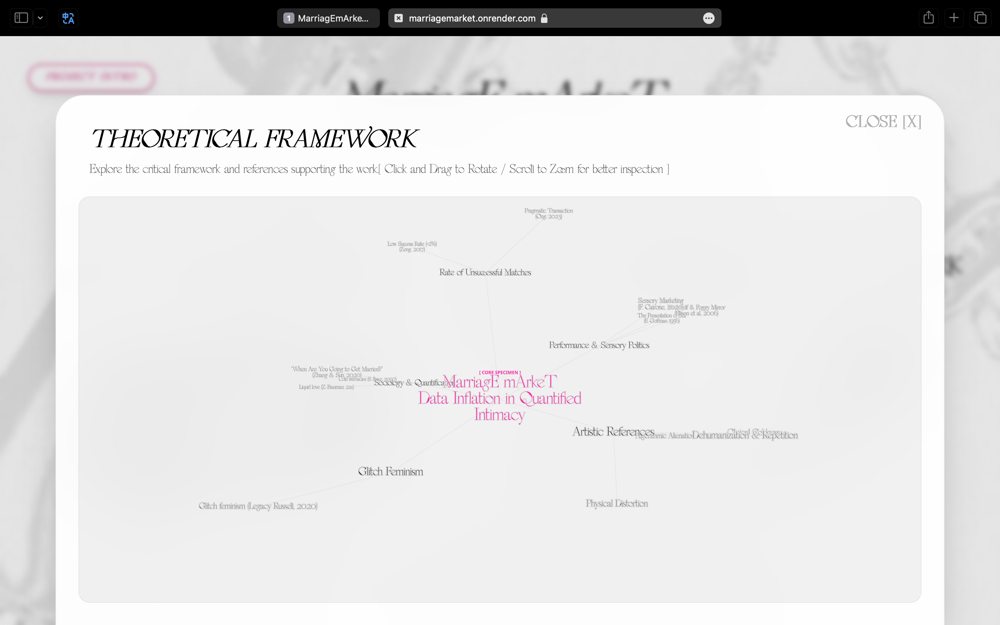
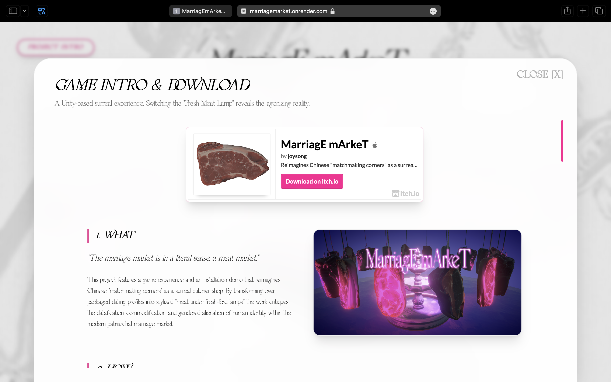
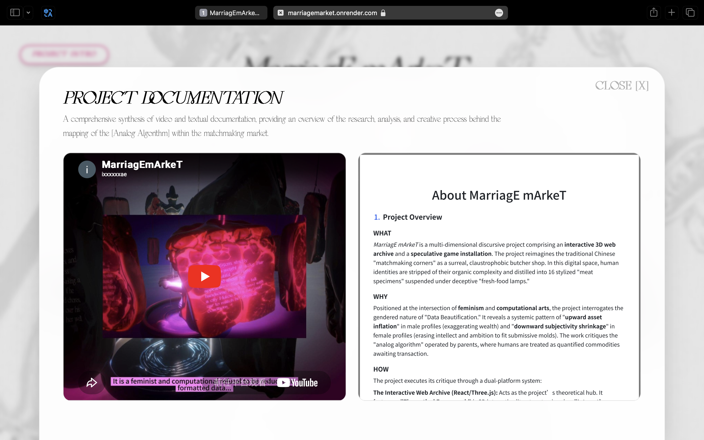

MarriagEmArkeT

Stemming from fieldwork at Chinese matchmaking corners, this project reimagines these pre-digital "analog algorithms" as a claustrophobic, surreal butcher shop. Here, complex human lives are reduced to formatted spreadsheets by parents acting as data brokers, highlighting a deeply flawed "Emotional Capitalism" where intimacy is transmuted into tradable capital.
The project manifests as an interactive 3D web archive and a Unity game. Users interact with a parametric data-visualizer, manipulating sliders to physically distort biological forms based on sociological data. In the game, players navigate 16 "meat specimens" suspended under deceptive "fresh-food lamps," utilizing a "System Glitch" mechanic to toggle the light and expose the harsh individual truths beneath the beautified data.
To realize this computational critique, I seamlessly integrated AI tools into a multi-software workflow while maintaining full creative direction. Using Tripo AI, I generated initial 3D base-meshes for the "flesh" specimens, which I then imported into Blender for iterative manual sculpting to achieve intricate organic textures.
Furthermore, I utilized Gemini to optimize the Website and Unity codebase, debug complex interactions, and even assist in the production of the background music, demonstrating a fluid collaboration between human intent and generative AI capabilities.
The transformation from sociological observation to a surreal space is a process of continuously stripping away reality and reconstructing "pain."

WHITE LIGHTING (SYSTEM GLITCH/TRUTH): When the player flips the switch, the environment instantly transitions to a harsh, cold, clinical white light. This "system glitch" strips away all beautification parameters, revealing the erased individual truths behind the meat—unfulfilled ambitions, hidden debts, or the painful cries of subjectivity.




Explore the full conceptual framework, parametric interactions, and research documentation on the project website.
https://marriagemarket.onrender.com





